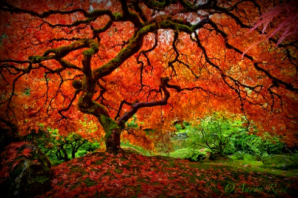

So schonst du beim Klettern die Natur | Bergwelten
 Menü Magazin Touren Hütten Unterkünfte Events Suche Anmelden Umweltbewusst am BergSo schonst du beim Klettern die Natur
Tipps & Tricks • 31. August 2020Am Fels zu sein, verschafft uns einzigartige Glücksgefühle – doch sollte man dabei immer auch Rücksicht auf die Natur nehmen. 3 Tipps für umweltbewusstes Klettern.
Foto: mauritius images/ Cultura / Alex Eggermont Beim Klettern sind wir nicht alleine - wir betreten Lebensraum von Tieren und Pflanzen1. Verwende wenig Weiß
Herrscht in der Kletterszene Streit um Chalk, geht es eher darum, dass die weißen Abdrücke Routen so deutlich kennzeichnen, als wäre man in der Kletterhalle. In manchen Gebieten, etwa im Elbsandstein , ist Chalk aber verboten, weil er die Poren des Steins verschließt und Griffe rutschiger macht. Wo er erlaubt ist, kann man Eco-Chalk verwenden: Er hinterlässt am Fels keine Spuren.
2. Respektiere den Brutschutz
Uhus, Wanderfalken und Steinadler zählen zu jenen Vogelarten, die ihre Nester am oder im Fels bauen. Damit sich brütende Vögel und kletternde Menschen nicht in die Quere kommen, sollte man die lokalen Sperrzeiten für bestimmte Gebiete unbedingt beachten. Sonst droht die Gefahr, dass sich Vögel bedrängt fühlen und ihre Brut unterbrechen – mit fatalen Folgen für den Nachwuchs.
3. Achte auf die Blütezeit
Auch seltene und spezialisierte Pflanzen findet man am Fels. Damit ihr Lebensraum trotz Klettersport erhalten bleibt, ist es einerseits wichtig, beim Zustieg auf den Wegen zu bleiben. Andererseits sollten manche Felsen auch unberührt bleiben, damit sich die Pflanzen ohne äußere Einflüsse entwickeln können. Sonst nimmt die Häufigkeit, aber auch die genetische Vielfalt ab.
Foto: Bergwelten Das Bergwelten Magazin, AT-Ausgabe (August/September 2020)Weitere praktische Outdoor-Tipps findest du im Bergwelten Magazin. Die aktuelle Ausgabe ( August/September 2020 ) ist überall im Zeitschriftenhandel oder ganz bequem per Abo für Österreich , Deutschland und die Schweiz erhältlich.
Kann man aus einem Bergsee trinken?
Klares, direkt aus der Natur stammendes Wasser – nach einem schweißtreibenden Aufstieg einen Schluck aus dem Bergsee zu nehmen, klingt verlockend. Warum es aber nicht besonders empfehlenswert ist, erfährst du hier. Wissen3 Tipps für umweltbewusstes Berg-Wandern
Auch zu Natur-Abenteuern muss man gelegentlich erst mal anreisen. Wir verraten dir 3 einfache Methoden, wie du am Weg zum Wanderziel und vor Ort auf die Natur aufpassen kannst. Berg-Know-How5 praktische Apps am Berg
GPS-Gerät, umfangreiche Wanderkarten und Co. können heute alle auf dem kleinen Computer vereint sein der bequem in jede Hosentasche passt. Im heutigen Berg-Know-How stellen wir euch einige praktische Apps für den nächsten Ausflug in die Berge vor.Beliebt auf Bergwelten
Aus dem MagazinRichtig bergab gehen
Der Aufstieg ist geschafft und der Gipfel erreicht, die Tour damit aber noch lang nicht beendet. Gerade beim Abstieg kommt es aufgrund von Müdigkeit und Unachtsamkeit oft zu Unfällen. Mit der richtigen Technik lässt sich das Risiko minimieren. Wir versorgen euch mit 6 hilfreichen Tipps. Foto-BlogGipfel-Tour: Hochschwab mit Fernsicht
Martin Kreil, Foto-Redakteur im Red Bull Media House, begeistert sich seit Kindheitstagen fürs Wandern und Fotografieren. Diese Kombination beschert uns eine sehenswerte Bilderstrecke! Auf seiner letzten Tour auf den Hochschwab (2.277 m) in der Obersteiermark präsentierte sich der Wander-September von seiner schönsten Seite. Geburtstag Reinhold Messner8 Dinge, die du über Reinhold Messner noch nicht wusstest
Am 17. September feiert der wohl berühmteste Bergsteiger und Abenteurer der Gegenwart seinen 76. Geburtstag. Zu Ehren der schillernden Persönlichkeit Reinhold Messners lüften wir 8 Geheimnisse, die ihr über ihn vermutlich noch nicht wusstet. Hütten12 Hütten für Genießer
Der Schmarrn ist so fantastisch flaumig, die Erdäpfelkruste knusprig, der Striezel einfach perfekt: Wir stellen euch zwölf Berghütten zum Schlemmen und Schauen vor! Hütten8 Hütten an Seen für den Spätsommer
Reinspringen werden jetzt womöglich nur noch die Hartgesottensten – trotzdem macht ein Bergsee eine Hütte zu einem ganz besonders schönen Wanderziel. In manchen kann man auch angeln! Wir stellen euch 8 Stützpunkte am Wasser vor, die noch mindestens bis Anfang September Gäste empfangen.Das Beste von Bergwelten
Nix mehr verpassen! Erhalte regelmäßig die Highlights von Bergwelten per Newsletter in dein E-Mail-Postfach.
Zur Newsletter-Anmeldung